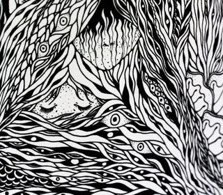
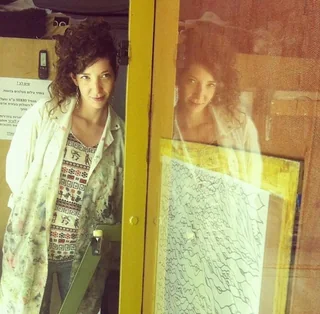
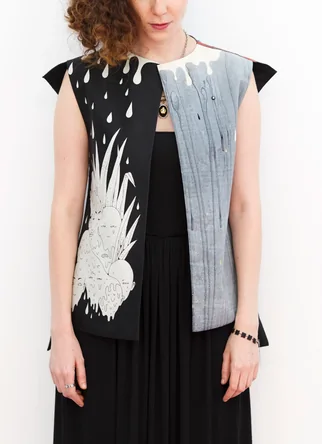
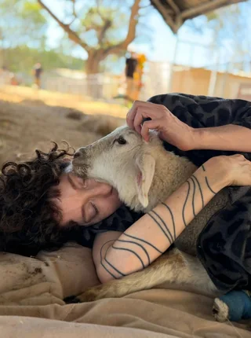
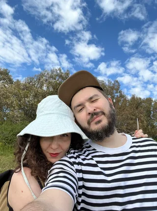

About me
I'm a senior product designer based in Tel Aviv, working across web and mobile.
How I got here
After graduating from Shenkar School of Engineering & Design, I managed an artist's gallery, worked in social media, and later worked as a content editor.
The projects I enjoyed most weren't purely visual. They also involved understanding people and figuring out how something should work.
That led me to study UX/UI and join a design agency, where I worked with clients in healthcare, banking, drone technology, and corporate training.



My work
What I enjoy most about product design is getting dropped into a new problem and learning my way into it. I'm naturally curious, so I ask a lot of questions, pull in the right people, and try to understand the world around the problem before deciding where to go. I like working openly, sharing ideas early, getting feedback quickly, and bringing people along as the work takes shape. A big part of what I bring to a team is the human side of the job: communication, presentation, mentoring, and creating the kind of relationships that make it easier to do good work together.
Outside of work
When I'm not working, I'm usually volunteering at an animal sanctuary, drawing, or making natural products as a certified aromatherapist.

